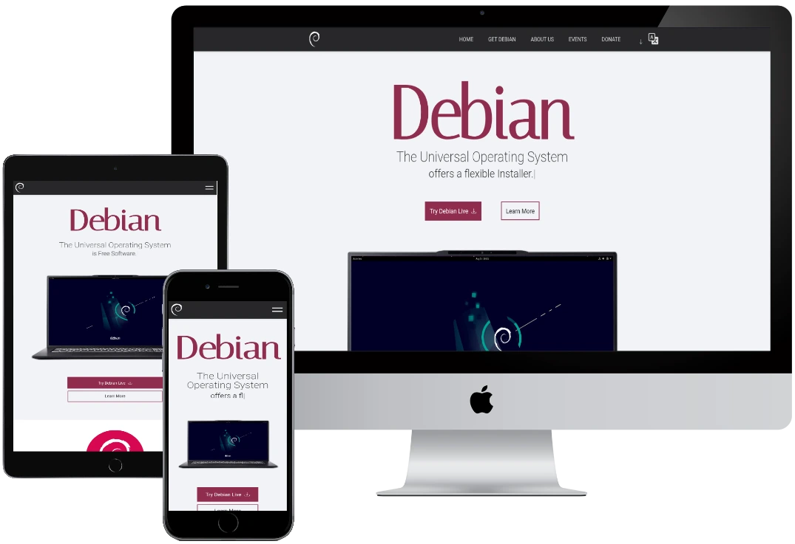

<!DOCTYPE html>
<html lang="en"></html>

<head>
    <meta charset="UTF-8">
    <meta name="viewport" content="width=device-width, initial-scale=1.0">
    <title>My Page</title>

    <script>
        /*
         @licstart  The following is the license notice for this file

         Copyright (C) 2025 Cristian Darío Acosta
        
         This file is licensed under the Apache License, Version 2.0.
         You may obtain a copy of the license at
         http://www.apache.org/licenses/LICENSE-2.0
        
         @licend  The above is the license notice for this file
        */
    </script>

    <link rel="icon" type="image/x-icon" href="assets/images/favicon/briefcase.webp>

    <link rel="preconnect" href="https://fonts.googleapis.com">
    <link rel="preconnect" href="https://fonts.gstatic.com" crossorigin>
    <link rel="preconnect" href="https://fonts.googleapis.com">
    <link rel="preconnect" href="https://fonts.gstatic.com" crossorigin>
    <link
        href="https://fonts.googleapis.com/css2?family=Open+Sans:ital,wght@0,300..800;1,300..800&family=Playfair+Display:ital,wght@0,400..900;1,400..900&display=swap"
        rel="stylesheet">
</head>
<link rel="stylesheet" href="../../styles/css/main.css">

<body class="body">

    <!-- DELETE WHEN FINISHED -->
    <div class="in_construction"><svg class="w-6 h-6 text-gray-800 dark:text-white" aria-hidden="true"
            xmlns="http://www.w3.org/2000/svg" width="24" height="24" fill="none" viewBox="0 0 24 24">
            <path stroke="currentColor" stroke-linecap="round" stroke-linejoin="round" stroke-width="2"
                d="M12 13V8m0 8h.01M21 12a9 9 0 1 1-18 0 9 9 0 0 1 18 0Z" />
        </svg>
        <span>Page under constant development.</span>
    </div>
    <!-- end DELETE WHEN FINISHED -->

    <header class="header">
        <nav class="header__nav" role="navigation" aria-label="Main menu">
            <div class="header__nav-logo">
                
            </div>
            <ul class="header__nav-list">
                <li class="header__nav-item"><a href="#" aria-current="page">Home</a></li>
                <li class="header__nav-item"><a href="#about_me">About Me</a></li>
                <li class="header__nav-item"><a href="#contact_me">Contact Me</a></li>
                <!-- Language menu -->
                <li class="header__nav-lang">
                    <button class="header__nav-langmenu" aria-haspopup="true" aria-expanded="false"
                        aria-controls="lang-menu" id="lang-menu-button" type="button">
                        <!-- Translate icon -->
                        <svg xmlns="http://www.w3.org/2000/svg" width="18" height="18" fill="currentColor"
                            class="bi bi-translate no-select" viewBox="0 0 16 16" aria-hidden="true" focusable="false">
                            <path
                                d="M4.545 6.714L4.11 8H3l1.862-5h1.284L8 8H6.833l-.435-1.286zm1.634-.736L5.5 3.956h-.049l-.679 2.022z" />
                            <path
                                d="M0 2a2 2 0 0 1 2-2h7a2 2 0 0 1 2 2v3h3a2 2 0 0 1 2 2v7a2 2 0 0 1-2 2H7a2 2 0 0 1-2-2v-3H2a2 2 0 0 1-2-2zm2-1a1 1 0 0 0-1 1v7a1 1 0 0 0 1 1h7a1 1 0 0 0 1-1V2a1 1 0 0 0-1-1zm7.138 9.995q.289.451.63.846c-.748.575-1.673 1.001-2.768 1.292.178.217.451.635.555.867 1.125-.359 2.08-.844 2.886-1.494.777.665 1.739 1.165 2.93 1.472.133-.254.414-.673.629-.89-1.125-.253-2.057-.694-2.82-1.284.681-.747 1.222-1.651 1.621-2.757H14V8h-3v1.047h.765c-.318.844-.74 1.546-1.272 2.13a6 6 0 0 1-.415-.492 2 2 0 0 1-.94.31" />
                        </svg>
                        <!-- Arrow icon -->
                        <svg xmlns="http://www.w3.org/2000/svg" width="16" height="16" fill="currentColor"
                            class="bi bi-chevron-down arrow" viewBox="0 0 16 16" aria-hidden="true" focusable="false">
                            <path fill-rule="evenodd"
                                d="M1.646 4.646a.5.5 0 0 1 .708 0L8 10.293l5.646-5.647a.5.5 0 0 1 .708.708l-6 6a.5.5 0 0 1-.708 0l-6-6a.5.5 0 0 1 0-.708" />
                        </svg>
                    </button>
                    <ul class="header__nav-langlist" id="lang-menu" role="menu" aria-labelledby="lang-menu-button">
                        <li class="header__nav-langitem" role="menuitem">
                            <a class="no-select" href="../../index.html">Español</a>
                        </li>
                        <li class="header__nav-langitem" role="menuitem">
                            <a class="no-select" href="">English</a>
                        </li>
                    </ul>
                </li>
            </ul>
            <!-- Burger menu -->
            <button class="header__nav-burguer" aria-label="Mobile menu" aria-expanded="false" type="button">
                <span class="header__nav-burguer-line" aria-hidden="true"></span>
                <span class="header__nav-burguer-line" aria-hidden="true"></span>
                <span class="header__nav-burguer-line" aria-hidden="true"></span>
            </button>
        </nav>
    </header>

    <main class="main">
        <section class="main__intro" aria-labelledby="intro-title" tabindex="-1">
            <div class="main__intro-salutation-container">
                <p class="main__intro-salutations" aria-hidden="true"></p>
                <p class="main__intro-salutations">, my name is.</p>
            </div>
            <h1 class="main__intro-name" id="intro-title" tabindex="0">
                Cristian Darío Acosta
            </h1>
            <h2 class="main__intro-position" tabindex="0">
                And I am a <span class="main__intro-position--type" aria-live="polite"></span> developer
            </h2>
            <button class="button mainbutton button--disabled" aria-disabled="true" tabindex="0"
                aria-label="Download CV (button disabled)">
                <span>Download CV</span>
                <svg class="w-6 h-6 text-gray-800 dark:text-white" aria-hidden="true" xmlns="http://www.w3.org/2000/svg"
                    width="24" height="24" fill="none" viewBox="0 0 24 24">
                    <path stroke="currentColor" stroke-linecap="round" stroke-linejoin="round" stroke-width="2"
                        d="M12 13V4M7 14H5a1 1 0 0 0-1 1v4a1 1 0 0 0 1 1h14a1 1 0 0 0 1-1v-4a1 1 0 0 0-1-1h-2m-1-5-4 5-4-5m9 8h.01" />
                </svg>
            </button>
            <div class="scroll-down-indicator" aria-hidden="true"></div>
        </section>

        <section class="description scroll-container target" id="about_me" aria-labelledby="about-me-title"
            tabindex="-1">
            <!-- scroll-container | Animation only -->
            <div class="js-scroll slideup" aria-live="polite">
                <!-- js-scroll | Animation only -->
                <h3 class="subtitle" id="about-me-title" tabindex="0">About Me</h3>
                <div class="description__content">
                    <div class="description__intro">
                        <p class="paragraph" tabindex="0">
                            I am a junior programmer with knowledge in MERN and LAMP. I am passionate about web development, open source, and I am always looking for new challenges to keep learning and improving my skills.
                        </p>
                    </div>
                    <span class="divider" aria-hidden="true"></span>
                    <div class="description__media">
                        
                        <p class="paragraph" tabindex="0">
                            I am about to graduate as a <span class="underline">programming technician</span> from the National University of Lomas de Zamora. Throughout my education, I have had the opportunity to acquire solid knowledge in programming and web development. In addition, I have completed <span class="underline">two diplomas in full stack web programming</span>, one at UTN del Chaco and another at ICARO, which has allowed me to deepen my knowledge in key technologies and stay up to date with market tools.
                            <br><br/>
                            I love to train and explore new technologies, as I believe that continuous learning is essential in the field of development. I am excited to apply my knowledge in real projects and contribute to innovative solutions.
                        </p>
                    </div>
                </div>
            </div>
        </section>

        <section class="skills scroll-container" aria-labelledby="skills-title" tabindex="-1">
            <!-- scroll-container | Animation only -->
            <div class="skills__content js-scroll" aria-live="polite">
                <h2 class="skills__title subtitle" id="skills-title" tabindex="0">My Skills</h2>
                <p class="skills__description paragraph" tabindex="0">Tools, Languages and Frameworks I use.</p>

                <div class="skills__category" role="region" aria-labelledby="frontend-title" tabindex="0">
                    <h3 class="skills__category-title" id="frontend-title">
                        <svg class="w-6 h-6 text-gray-800 dark:text-white" aria-hidden="true"
                            xmlns="http://www.w3.org/2000/svg" width="24" height="24" fill="none" viewBox="0 0 24 24">
                            <path stroke="currentColor" stroke-linecap="round" stroke-linejoin="round" stroke-width="2"
                                d="M12 15v5m-3 0h6M4 11h16M5 15h14a1 1 0 0 0 1-1V5a1 1 0 0 0-1-1H5a1 1 0 0 0-1 1v9a1 1 0 0 0 1 1Z" />
                        </svg>
                        <span>Frontend</span>
                    </h3>
                    <ul class="skills__list" role="list" tabindex="0">
                        <li class="skills__item">HTML</li>
                        <li class="skills__item">CSS</li>
                        <li class="skills__item">SASS</li>
                        <li class="skills__item">JavaScript</li>
                        <li class="skills__item">React</li>
                        <li class="skills__item">Bootstrap</li>
                    </ul>
                </div>

                <div class="skills__category" role="region" aria-labelledby="backend-title" tabindex="0">
                    <h3 class="skills__category-title" id="backend-title">
                        <svg class="w-6 h-6 text-gray-800 dark:text-white" aria-hidden="true"
                            xmlns="http://www.w3.org/2000/svg" width="24" height="24" fill="none" viewBox="0 0 24 24">
                            <path stroke="currentColor" stroke-linecap="round" stroke-linejoin="round" stroke-width="2"
                                d="M19 6c0 1.657-3.134 3-7 3S5 7.657 5 6m14 0c0-1.657-3.134-3-7-3S5 4.343 5 6m14 0v6M5 6v6m0 0c0 1.657 3.134 3 7 3s7-1.343 7-3M5 12v6c0 1.657 3.134 3 7 3s7-1.343 7-3v-6" />
                        </svg>
                        <span>Backend</span>
                    </h3>
                    <ul class="skills__list" role="list" tabindex="0">
                        <li class="skills__item">Java</li>
                        <li class="skills__item">Python</li>
                        <li class="skills__item">PHP</li>
                        <li class="skills__item">Node.js</li>
                        <li class="skills__item">Express</li>
                        <li class="skills__item">Flask</li>
                        <li class="skills__item">Sequelize</li>
                        <li class="skills__item">JWT</li>
                        <li class="skills__item">REST APIs</li>
                        <li class="skills__item">MySQL</li>
                        <li class="skills__item">SQLite</li>
                        <li class="skills__item">MariaDB</li>
                    </ul>
                </div>

                <div class="skills__category" role="region" aria-labelledby="tools-title" tabindex="0">
                    <h3 class="skills__category-title" id="tools-title">
                        <svg class="w-6 h-6 text-gray-800 dark:text-white" aria-hidden="true"
                            xmlns="http://www.w3.org/2000/svg" width="24" height="24" fill="none" viewBox="0 0 24 24">
                            <path stroke="currentColor" stroke-linejoin="round" stroke-width="2"
                                d="M7.58209 8.96025 9.8136 11.1917l-1.61782 1.6178c-1.08305-.1811-2.23623.1454-3.07364.9828-1.1208 1.1208-1.32697 2.8069-.62368 4.1363.14842.2806.42122.474.73509.5213.06726.0101.1347.0133.20136.0098-.00351.0666-.00036.1341.00977.2013.04724.3139.24069.5867.52125.7351 1.32944.7033 3.01552.4971 4.13627-.6237.8375-.8374 1.1639-1.9906.9829-3.0736l4.8107-4.8108c1.0831.1811 2.2363-.1454 3.0737-.9828 1.1208-1.1208 1.3269-2.80688.6237-4.13632-.1485-.28056-.4213-.474-.7351-.52125-.0673-.01012-.1347-.01327-.2014-.00977.0035-.06666.0004-.13409-.0098-.20136-.0472-.31386-.2406-.58666-.5212-.73508-1.3294-.70329-3.0155-.49713-4.1363.62367-.8374.83741-1.1639 1.9906-.9828 3.07365l-1.7788 1.77875-2.23152-2.23148-1.41419 1.41424Zm1.31056-3.1394c-.04235-.32684-.24303-.61183-.53647-.76186l-1.98183-1.0133c-.38619-.19746-.85564-.12345-1.16234.18326l-.86321.8632c-.3067.3067-.38072.77616-.18326 1.16235l1.0133 1.98182c.15004.29345.43503.49412.76187.53647l1.1127.14418c.3076.03985.61628-.06528.8356-.28461l.86321-.8632c.21932-.21932.32446-.52801.2846-.83561l-.14417-1.1127ZM19.4448 16.4052l-3.1186-3.1187c-.7811-.781-2.0474-.781-2.8285 0l-.1719.172c-.7811.781-.7811 2.0474 0 2.8284l3.1186 3.1187c.7811.781 2.0474.781 2.8285 0l.1719-.172c.7811-.781.7811-2.0474 0-2.8284Z" />
                        </svg>
                        <span>Tools</span>
                    </h3>
                    <ul class="skills__list" role="list" tabindex="0">
                        <li class="skills__item">Git</li>
                        <li class="skills__item">Postman</li>
                        <li class="skills__item">GNU+Linux</li>
                    </ul>
                </div>
            </div>
        </section>

        <section class="projects scroll-container" aria-labelledby="projects-section-title">
            <div class="js-scroll" role="region" aria-live="polite" aria-atomic="true">
                <h4 id="projects-section-title" class="projects__subtitle subtitle">My Projects</h4>
                <p class="projects__intro paragraph">Some personal projects I have done</p>
            </div>

            <div class="projects__item js-scroll">
                <div class="projects__content">
                    <div class="projects__card" role="group" aria-labelledby="project1-title" tabindex="0">
                        
                        <div class="projects__description">
                            <h5 id="project1-title" class="projects__title">GetPocket-like Articles Page</h5>
                            <div class="projects__buttons">
                                <button class="button button--secondary button--disabled" aria-disabled="true" disabled
                                    aria-label="Demo not available">
                                    <span>Demo</span>
                                    <svg class="w-6 h-6 text-gray-800 dark:text-white" aria-hidden="true"
                                        xmlns="http://www.w3.org/2000/svg" width="24" height="24" fill="none"
                                        viewBox="0 0 24 24">
                                        <path stroke="currentColor" stroke-linecap="round" stroke-linejoin="round"
                                            stroke-width="2"
                                            d="M18 14v4.833A1.166 1.166 0 0 1 16.833 20H5.167A1.167 1.167 0 0 1 4 18.833V7.167A1.166 1.166 0 0 1 5.167 6h4.618m4.447-2H20v5.768m-7.889 2.121 7.778-7.778" />
                                    </svg>
                                </button>
                                <a href="https://github.com/Acosta-gh/blog_MERN" class="button button--tertiary"
                                    role="link"
                                    aria-label="GitHub source code for the GetPocket-like Articles Page project"
                                    target="_blank" rel="noopener noreferrer">
                                    <span>Code</span>
                                    <svg class="w-6 h-6 text-gray-800 dark:text-white" aria-hidden="true"
                                        xmlns="http://www.w3.org/2000/svg" width="24" height="24" fill="none"
                                        viewBox="0 0 24 24">
                                        <path stroke="currentColor" stroke-linecap="round" stroke-linejoin="round"
                                            stroke-width="2"
                                            d="M18 14v4.833A1.166 1.166 0 0 1 16.833 20H5.167A1.167 1.167 0 0 1 4 18.833V7.167A1.166 1.166 0 0 1 5.167 6h4.618m4.447-2H20v5.768m-7.889 2.121 7.778-7.778" />
                                    </svg>
                                </a>
                            </div>
                            <p class="projects__paragraph paragraph">
                                This project started as a simple blog, but over time it evolved into an articles platform inspired by GetPocket. It's a personal project that I am very fond of and plan to turn into my main blog. Although it is still under development, it already has a solid foundation and enough functionality to be part of my portfolio.
                            </p>
                            <div class="projects__tags" aria-label="Technologies used in this project">
                                <span class="projects__tag tag2">REACT</span>
                                <span class="projects__tag tag2">SCSS</span>
                                <span class="projects__tag tag2">MARIADB</span>
                                <span class="projects__tag tag2">NODEJS</span>
                                <span class="projects__tag tag2">EXPRESS</span>
                                <span class="projects__tag tag2">SEQUELIZE</span>
                            </div>
                        </div>
                    </div>
                </div>
            </div>
            <div class="projects__item js-scroll">
                <div class="projects__content">
                    <div class="projects__card" role="group" aria-labelledby="project2-title" tabindex="0">
                        
                        <div class="projects__description">
                            <h5 id="project2-title" class="projects__title">Debian Page Redesign with LAMPython Stack</h5>
                            <div class="projects__buttons">
                                <button class="button button--secondary button--disabled" aria-disabled="true" disabled
                                    aria-label="Demo not available">
                                    <span>Demo</span>
                                    <svg class="w-6 h-6 text-gray-800 dark:text-white" aria-hidden="true"
                                        xmlns="http://www.w3.org/2000/svg" width="24" height="24" fill="none"
                                        viewBox="0 0 24 24">
                                        <path stroke="currentColor" stroke-linecap="round" stroke-linejoin="round"
                                            stroke-width="2"
                                            d="M18 14v4.833A1.166 1.166 0 0 1 16.833 20H5.167A1.167 1.167 0 0 1 4 18.833V7.167A1.166 1.166 0 0 1 5.167 6h4.618m4.447-2H20v5.768m-7.889 2.121 7.778-7.778" />
                                    </svg>
                                </button>
                                <a href="https://github.com/Acosta-gh/debian-website-redesign_REACT"
                                    class="button button--tertiary" role="link"
                                    aria-label="GitHub source code for the Debian Page Redesign project"
                                    target="_blank" rel="noopener noreferrer">
                                    <span>Code</span>
                                    <svg class="w-6 h-6 text-gray-800 dark:text-white" aria-hidden="true"
                                        xmlns="http://www.w3.org/2000/svg" width="24" height="24" fill="none"
                                        viewBox="0 0 24 24">
                                        <path stroke="currentColor" stroke-linecap="round" stroke-linejoin="round"
                                            stroke-width="2"
                                            d="M18 14v4.833A1.166 1.166 0 0 1 16.833 20H5.167A1.167 1.167 0 0 1 4 18.833V7.167A1.166 1.166 0 0 1 5.167 6h4.618m4.447-2H20v5.768m-7.889 2.121 7.778-7.778" />
                                    </svg>
                                </a>
                            </div>
                            <p class="projects__paragraph paragraph">
                                This project is a reimagining of the official Debian website, with a modern and responsive design. It was developed using React, Vite, and SCSS on the frontend, and features a small API built with Python and Flask to manage dynamic data, such as news posts.
                            </p>
                            <div class="projects__tags" aria-label="Technologies used in this project">
                                <span class="projects__tag tag2">REACT</span>
                                <span class="projects__tag tag2">SCSS</span>
                                <span class="projects__tag tag2">MARIADB</span>
                                <span class="projects__tag tag2">PYTHON</span>
                                <span class="projects__tag tag2">FLASK</span>
                                <span class="projects__tag tag2">SQLAlchemy</span>
                                <span class="projects__tag tag2">JWT</span>
                            </div>
                        </div>
                    </div>
                </div>

            </div>
            <div class="projects__item js-scroll">
                <div class="projects__content">
                    <div class="projects__card" role="group" aria-labelledby="project3-title" tabindex="0">
                        
                        <div class="projects__description">
                            <h5 id="project3-title" class="projects__title">Personal Portfolio</h5>
                            <div class="projects__buttons">
                                <button class="button button--secondary button--disabled" aria-disabled="true" disabled
                                    aria-label="Demo not available">
                                    <span>Demo</span>
                                    <svg class="w-6 h-6 text-gray-800 dark:text-white" aria-hidden="true"
                                        xmlns="http://www.w3.org/2000/svg" width="24" height="24" fill="none"
                                        viewBox="0 0 24 24">
                                        <path stroke="currentColor" stroke-linecap="round" stroke-linejoin="round"
                                            stroke-width="2"
                                            d="M18 14v4.833A1.166 1.166 0 0 1 16.833 20H5.167A1.167 1.167 0 0 1 4 18.833V7.167A1.166 1.166 0 0 1 5.167 6h4.618m4.447-2H20v5.768m-7.889 2.121 7.778-7.778" />
                                    </svg>
                                </button>
                                <a href="https://github.com/Acosta-gh/Mi-Portafolio" class="button button--tertiary"
                                    role="link" aria-label="GitHub source code for the Personal Portfolio"
                                    target="_blank" rel="noopener noreferrer">
                                    <span>Code</span>
                                    <svg class="w-6 h-6 text-gray-800 dark:text-white" aria-hidden="true"
                                        xmlns="http://www.w3.org/2000/svg" width="24" height="24" fill="none"
                                        viewBox="0 0 24 24">
                                        <path stroke="currentColor" stroke-linecap="round" stroke-linejoin="round"
                                            stroke-width="2"
                                            d="M18 14v4.833A1.166 1.166 0 0 1 16.833 20H5.167A1.167 1.167 0 0 1 4 18.833V7.167A1.166 1.166 0 0 1 5.167 6h4.618m4.447-2H20v5.768m-7.889 2.121 7.778-7.778" />
                                    </svg>
                                </a>
                            </div>
                            <p class="projects__paragraph paragraph">
                                This is my personal portfolio, designed and developed with a focus on simplicity, performance, and accessibility. I have used essential tools to ensure it is lightweight, efficient, and easy to deploy, even on platforms like GitHub Pages, without sacrificing a minimalist, responsive, and visually appealing design.
                            </p>

                            <div class="projects__tags" aria-label="Technologies used in this project">
                                <span class="projects__tag tag2">HTML</span>
                                <span class="projects__tag tag2">SASS</span>
                                <span class="projects__tag tag2">JS</span>
                            </div>
                        </div>
                    </div>
                </div>

            </div>
            <div class="projects__item js-scroll">
                <div class="projects__content">
                    <div class="projects__card" role="group" aria-labelledby="project-yagc-title" tabindex="0">
                        
                        <div class="projects__description">
                            <h5 id="project-yagc-title" class="projects__title">YAGC (Yet Another GUI for ClamAV)</h5>
                            <div class="projects__buttons">
                                <a href="https://github.com/Acosta-gh/clamav-tkinter_PYTHON"
                                    class="button button--secondary" role="link"
                                    aria-label="YAGC source code on GitHub" target="_blank"
                                    rel="noopener noreferrer">
                                    <span>Code</span>
                                    <svg class="w-6 h-6 text-gray-800 dark:text-white" aria-hidden="true"
                                        xmlns="http://www.w3.org/2000/svg" width="24" height="24" fill="none"
                                        viewBox="0 0 24 24">
                                        <path stroke="currentColor" stroke-linecap="round" stroke-linejoin="round"
                                            stroke-width="2"
                                            d="M18 14v4.833A1.166 1.166 0 0 1 16.833 20H5.167A1.167 1.167 0 0 1 4 18.833V7.167A1.166 1.166 0 0 1 5.167 6h4.618m4.447-2H20v5.768m-7.889 2.121 7.778-7.778" />
                                    </svg>
                                </a>
                            </div>
                            <p class="projects__paragraph paragraph">
                                YAGC is a graphical user interface (GUI) designed to simplify the use of ClamAV, an open source antivirus software. This application is inspired by projects like ClamWin and ClamTk, offering users a more accessible and visual experience to perform antivirus scans on their systems quickly and easily.
                            </p>

                            <div class="projects__tags" aria-label="Technologies used in this project">
                                <span class="projects__tag tag2">PYTHON</span>
                                <span class="projects__tag tag2">Tkinter</span>
                                <span class="projects__tag tag2">GNU+LINUX</span>
                                <span class="projects__tag tag2">CLI</span>
                            </div>
                        </div>
                    </div>
                </div>

            </div>
        </section>
    </main>

    <footer class="footer target" id="contact_me" role="contentinfo" aria-label="Contact and social networks">
        <div class="footer__content">
            <ul class="footer__socials" role="list" aria-label="Links to social networks">
                <li>
                    <a class="footer__socials-link" href="https://github.com/Acosta-gh" target="_blank"
                        rel="noopener noreferrer"
                        aria-label="Visit my GitHub profile (opens in a new tab)">
                        <svg xmlns="http://www.w3.org/2000/svg" width="16" height="16" fill="currentColor"
                            class="bi bi-github" viewBox="0 0 16 16" aria-hidden="true" focusable="false">
                            <path d="M8 0C3.58 0 0 3.58 0 8c0 3.54 2.29 6.53 5.47 7.59.4.07.55-.17.55-.38
                 0-.19-.01-.82-.01-1.49-2.01.37-2.53-.49-2.69-.94-.09-.23-.48-.94-.82-1.13-.28-.15-.68-.52-.01-.53.63-.01
                 1.08.58 1.23.82.72 1.21 1.87.87 2.33.66.07-.52.28-.87.51-1.07-1.78-.2-3.64-.89-3.64-3.95
                 0-.87.31-1.59.82-2.15-.08-.2-.36-1.02.08-2.12 0 0 .67-.21 2.2.82.64-.18 1.32-.27
                 2-.27s1.36.09 2 .27c1.53-1.04 2.2-.82 2.2-.82.44 1.1.16 1.92.08
                 2.12.51.56.82 1.27.82 2.15 0 3.07-1.87 3.75-3.65
                 3.95.29.25.54.73.54 1.48 0 1.07-.01 1.93-.01 2.2 0
                 .21.15.46.55.38A8.01 8.01 0 0 0 16 8c0-4.42-3.58-8-8-8" />
                        </svg>
                        <span>GitHub</span>
                    </a>
                </li>
                <li>
                    <a class="footer__socials-link" href="https://www.linkedin.com/in/cristian-acosta01" target="_blank"
                        rel="noopener noreferrer"
                        aria-label="Visit my LinkedIn profile (opens in a new tab)">
                        <svg xmlns="http://www.w3.org/2000/svg" width="16" height="16" fill="currentColor"
                            class="bi bi-linkedin" viewBox="0 0 16 16" aria-hidden="true" focusable="false">
                            <path d="M0 1.146C0 .513.526 0 1.175 0h13.65C15.474 0 16
                 .513 16 1.146v13.708c0 .633-.526 1.146-1.175
                 1.146H1.175C.526 16 0 15.487 0 14.854zm4.943
                 12.248V6.169H2.542v7.225zm-1.2-8.212c.837 0
                 1.358-.554 1.358-1.248-.015-.709-.52-1.248-1.342-1.248S2.4
                 3.226 2.4 3.934c0 .694.521 1.248 1.327 1.248zm4.908
                 8.212V9.359c0-.216.016-.432.08-.586.173-.431.568-.878
                 1.232-.878.869 0 1.216.662 1.216
                 1.634v3.865h2.401V9.25c0-2.22-1.184-3.252-2.764-3.252-1.274
                 0-1.845.7-2.165 1.193v.025h-.016l.016-.025V6.169h-2.4c.03.678
                 0 7.225 0 7.225z" />
                        </svg>
                        <span>LinkedIn</span>
                    </a>
                </li>
                <li>
                    <a class="footer__socials-link" href="https://social.vivaldi.net/@acosta01" target="_blank"
                        rel="noopener noreferrer"
                        aria-label="Visit my Vivaldi Social profile (opens in a new tab)">
                        <svg xmlns="http://www.w3.org/2000/svg" width="16" height="16" fill="currentColor"
                            class="bi bi-mastodon" viewBox="0 0 16 16" aria-hidden="true" focusable="false">
                            <path d="M11.19 12.195c2.016-.24 3.77-1.475 3.99-2.603.348-1.778.32-4.339.32-4.339
                 0-3.47-2.286-4.488-2.286-4.488C12.062.238 10.083.017 8.027
                 0h-.05C5.92.017 3.942.238 2.79.765c0 0-2.285
                 1.017-2.285 4.488l-.002.662c-.004.64-.007
                 1.35.011 2.091.083 3.394.626 6.74 3.78 7.57
                 1.454.383 2.703.463 3.709.408 1.823-.1 2.847-.647
                 2.847-.647l-.06-1.317s-1.303.41-2.767.36c-1.45-.05-2.98-.156-3.215-1.928a4
                 4 0 0 1-.033-.496s1.424.346 3.228.428c1.103.05 2.137-.064
                 3.188-.189zm1.613-2.47H11.13v-4.08c0-.859-.364-1.295-1.091-1.295-.804
                 0-1.207.517-1.207 1.541v2.233H7.168V5.89c0-1.024-.403-1.541-1.207-1.541-.727
                 0-1.091.436-1.091 1.296v4.079H3.197V5.522q0-1.288.66-2.046c.456-.505
                 1.052-.764 1.793-.764.856 0 1.504.328 1.933.983L8 4.39l.417-.695c.429-.655
                 1.077-.983 1.934-.983.74 0 1.336.259 1.791.764q.662.757.661
                 2.046z" />
                        </svg>
                        <span>Vivaldi Social</span>
                    </a>
                </li>
            </ul>
        </div>
        <a href="./javascript.html" data-jslicense="1" aria-label="JavaScript license information">
            JavaScript license information
        </a>
    </footer>

</body>
<script src="../../scripts/main.js"></script>

</html>
